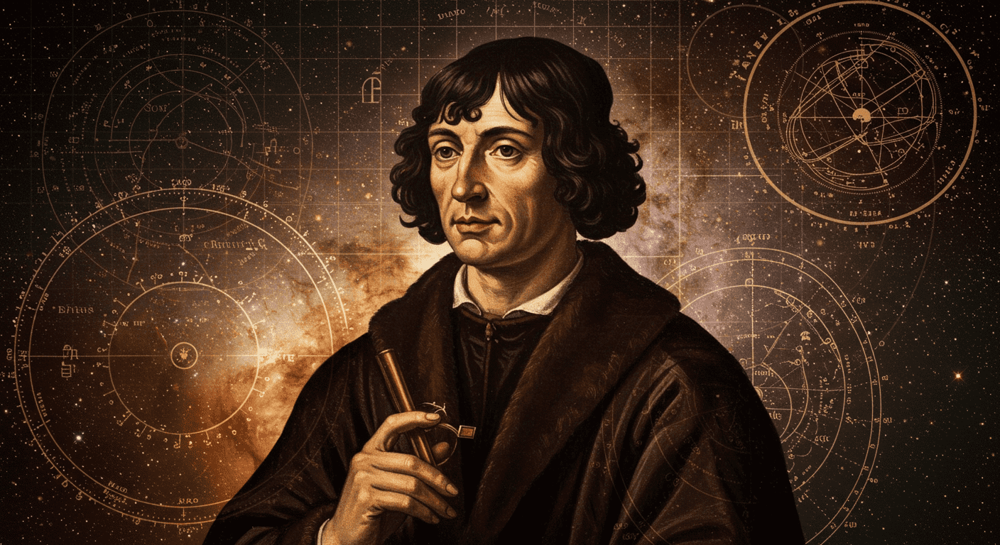
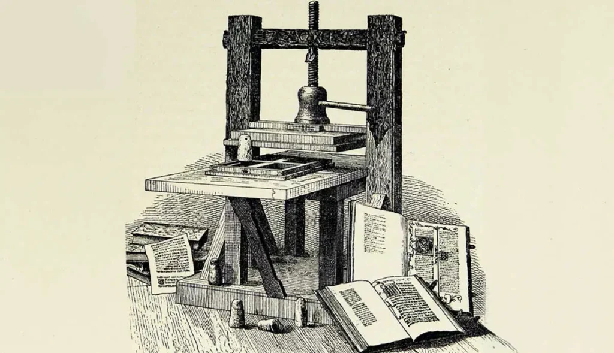

Natureza da Ciência
Aula de abertura para futuros professores: menos memorização mecânica, mais pensamento crítico, curiosidade e fascinação pelo funcionamento do universo.
Por que a luz apagou?
Essa pergunta simples já coloca a mente científica em movimento: observar, suspeitar, testar e encontrar causas.
A ideia desta aula é mostrar que ciência não é um bloco de fórmulas. É uma forma humana de perguntar, errar, testar e entender.
Antes da resposta, vem o espanto
Ciência começa no cotidiano
- Quando algo muda, a mente pergunta o que causou essa mudança.
- O pensamento racional troca superstição por relações de causa e efeito.
- Ciência é uma conquista coletiva, construída por povos diferentes ao longo do tempo.


O método é uma sequência de perguntas bem feitas
Observar
Perceber um fenômeno digno de explicação.
Questionar
Converter espanto em problema investigável.
Hipotetizar
Propor uma explicação provisória.
Prever
Antecipar o que deveria acontecer se a hipótese estiver certa.
Testar
Colocar a previsão diante da realidade.
Concluir
Organizar a melhor explicação compatível com as evidências.
Equações não são a ciência inteira. Elas entram para organizar relações entre grandezas, funcionando como guias para o pensamento.
Uma hipótese científica precisa poder falhar
“Os planetas definem o momento certo para tomar decisões”
Essa frase pode soar sofisticada, mas não entrega um teste claro que possa mostrá-la errada.
Sem possibilidade de refutação, ela fica fora do campo científico.
“Se a hipótese estiver certa, veremos este efeito sob estas condições”
Agora existe uma previsão verificável. Se o efeito não aparecer, a hipótese precisa ser revista ou abandonada.
Isso é falseabilidade: a ciência avança aceitando o risco de estar errada.
A experiência derruba a autoridade quando os fatos falam mais alto

- Durante séculos, a autoridade de Aristóteles sustentou a ideia de que corpos mais pesados cairiam mais rápido.
- Galileu muda o jogo: em vez de discutir apenas com argumentos, ele põe a natureza para responder.
- O que vale não é a tradição, mas a reprodução do resultado.
A Torre de Pisa simboliza essa virada histórica: a ciência deixa de pedir permissão à autoridade e passa a exigir evidência.
A discussão filosófica é importante, mas é o experimento que decide o que pode ser aceito como conhecimento científico.
Fato, lei e teoria têm papéis diferentes
Dados que podem ser revistos
Um fato é algo observável e verificável por quem examina o fenômeno com cuidado.
Regularidade testada
Uma lei resume um padrão que resistiu a muitos testes e não foi contraditado.
Síntese explicativa
Uma teoria integra fatos e hipóteses bem testadas e evolui quando surgem novas evidências.
O que corrigir na sala de aula
Muita gente usa “teoria” como se fosse sinônimo de palpite. Em ciência, é o contrário: teoria é uma construção forte, provisória e refinável.
Teorias não enfraquecem quando mudam. Elas se tornam mais precisas ao incorporar novas informações.
Pseudociência imita a ciência, mas evita o escrutínio
Sinais de alerta
- Promete resultados grandiosos sem teste sério.
- Escolhe só os casos que parecem confirmar a ideia.
- Desconfia de revisão, repetição e crítica.
- Usa linguagem científica para esconder ausência de evidência.
Exemplos que pedem cuidado
- Astrologia: parece organizada, mas não se sustenta como ciência.
- Tratamentos milagrosos: podem explorar esperança e medo sem comprovação real.
- Promessas de cura instantânea: devem ser confrontadas com dados, não com desejo.
O disfarce da pseudociência: quando a magia veste o jaleco
Magia, agora com software
- Antes, tentava-se subjugar a natureza por forças sobrenaturais.
- A ciência trabalha dentro das leis naturais e pede testes públicos.
- A pseudociência moderna veste a crença antiga com uma roupagem tecnológica.
- Dados, jargões e computadores podem apenas maquiar uma premissa mística.
Tecnologia atual, mentalidade pré-científica.
Acaso, farsa e custo social
Adivinhar o sexo de um bebê com um pêndulo tem a mesma força do acaso.
A ecografia científica atinge muito mais precisão porque se apoia em método, instrumentação e validação.
O truque da previsibilidade
- Acertar o óbvio não prova ciência.
- O teste real do rabdomante seria apontar onde não há água.
- Quando um método não supera o acaso, ele não merece prestígio científico.
Máquinas de energia infinita, promessas vazias e a febre da astrologia mostram que a pseudociência também é um negócio lucrativo.
O custo social é real: dinheiro, tempo e confiança pública são desviados do que funciona.
A ciência trabalha com o natural observável
Como?
Busca mecanismos, regularidades e explicações testáveis sobre o mundo físico.
Quem?
Explora experiência, expressão e interpretação humana.
Por quê?
Procura sentido, propósito, valor e transcendência.
Natural
É o que pode ser observado, descrito e testado por meio de evidências públicas.
Sobrenatural
Fica fora do método científico porque não se oferece como hipótese testável.
Ciência e tecnologia não são a mesma coisa
Busca conhecer
Organiza perguntas sobre a natureza e produz explicações confiáveis.
Seu foco é compreender, não apenas aplicar.
Busca usar
Transforma conhecimento em instrumentos, processos e soluções práticas.
Ela é uma ferramenta neutra: o impacto depende do uso humano.
A mesma ferramenta pode aliviar sofrimento ou ampliar danos. A responsabilidade ética não mora no objeto, mas nas escolhas de quem o usa.
A árvore do conhecimento científico
Base sobre matéria, energia, movimento e interação.
Explica como a matéria é composta e transformada.
Estuda a matéria viva e seus sistemas complexos.
Ciências da Terra
Geologia, meteorologia e oceanografia combinam física e química para ler o planeta.
Astronomia
Amplia essas bases para compreender planetas, estrelas e galáxias.
Ideia central
Quanto mais profundas as bases, mais forte fica o conjunto das ciências integradas.
Física conceitual começa com compreensão, não com pressa
Destaques
- Há professores que entram direto nas contas, mas perdem a ideia central do fenômeno.
- Ensinar conceitualmente ajuda a construir entendimento antes da técnica.
- Sem conceito, o aluno decora procedimentos sem saber por que eles funcionam.
A boa aula de física não começa na fórmula. Ela começa na pergunta certa, na observação atenta e no raciocínio bem guiado.
É isso que abre caminho para a resolução de problemas com sentido.
Aristóteles e o universo em ordem
Movimento natural
Aristóteles dividiu o movimento em duas classes: natural e violento.
Empurrões e puxões
O movimento violento exigia causas externas agindo o tempo todo sobre o objeto.
Cada coisa busca seu lugar
Cada objeto tenderia ao seu “lugar apropriado” no universo: a fumaça sobe, a pedra cai.
Rapidez proporcional ao peso
Na formulação aristotélica, os objetos caíam com rapidez proporcional aos seus pesos.
A conclusão aristotélica
O estado normal de qualquer objeto na Terra seria o repouso absoluto.
Copérnico: a Terra sai do centro
A revolução silenciosa
- Copérnico formulou a teoria de que a maneira mais simples de explicar os movimentos celestes era colocar a Terra e os planetas circulando o Sol.
- Ele guardou seus pensamentos por anos, temendo a perseguição e duvidando da própria teoria.
- A ideia de uma Terra móvel era chocante porque contrariava Aristóteles e a doutrina da Igreja.
- De Revolutionibus só chegou às suas mãos no dia de sua morte, em 1543.
Galileu e o fim do repouso
A experimentação vence a lógica antiga
- Galileu forneceu a primeira refutação definitiva das ideias de Aristóteles usando observação e experimento.
- A lenda da Torre de Pisa mostra a ideia central: objetos de pesos diferentes, soltos ao mesmo tempo, caem juntos, desconsiderando a resistência do ar.
- Ele demonstrou que a experimentação é o melhor teste de conhecimento, superando a pura lógica antiga.
A física avança quando a natureza é colocada para responder, e não apenas quando as ideias parecem convincentes.
O experimento definitivo: os planos inclinados
A inércia não é uma força, mas a resistência da matéria a mudanças no movimento.
Pausa para pensar
- Rolando bolas em planos inclinados, Galileu notou que elas ganhavam velocidade na descida e perdiam na subida.
- Ele raciocinou que, em um plano horizontal perfeitamente liso e infinito, a bola nunca perderia sua rapidez.
- O atrito apareceu como força retardadora.
- A inércia é a propriedade de um objeto de tender a manter-se em movimento numa linha reta eternamente, sem empurrão ou puxão.
Newton e as leis do movimento
A síntese final
- Nascido em 1642, poucos meses após a morte de Galileu, Newton deu o próximo grande passo da ciência.
- Aos 23 anos, desenvolveu suas famosas leis do movimento, suplantando as ideias de Aristóteles que dominaram o mundo por 2.000 anos.
- A Primeira Lei de Newton é uma reafirmação direta do conceito de inércia descoberto por Galileu.
- A publicação do Principia abriu o caminho para uma nova visão completa do universo.
A ciência avança quando uma boa ideia não substitui a observação, mas nasce dela e volta a ela para ser testada.
Galileu prepara o caminho; Newton organiza a estrutura.